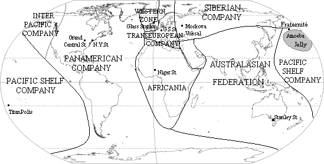

Les Compagnies ferroviaires en 2360
Avertissement : cette carte est une interprétation personnelle de ma lecture des Compagnie des Glaces. Elle n'est donc pas exempte d'erreurs.
La carte est cliquable